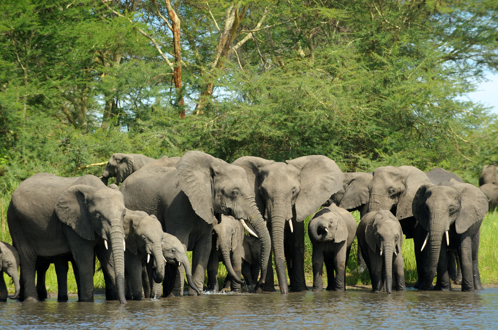

Le mont du Cameroun, Cameroun
Également appelé Mont Fako ou plus communément le Char des dieux, le mont Cameroun est le plus haut sommet d’Afrique après le djebel Toubkal au Maroc. Il culmine à 4090 m selon les estimations. Le mont Cameroun est situé dans le sud-ouest du Cameroun, non loin du côté atlantique. Il s’agit du volcan le plus actif de l’Afrique de l’Ouest, avec au total neuf éruptions au cours du XXe siècle. Le mont Cameroun forme une montagne isolée qui s’élève au-dessus des plaines côtières. Allez admirer cette merveille.
Le Musée égyptien, Egypte
Aller au Caire sans visiter le musée égyptien est un véritable gâchis. Fréquenté depuis 1902, il se trouve à la place Tahrir dans la capitale égyptienne. C’est un musée qui est consacré à l’Antiquité égyptienne et qui contient plus de 120.000 objets. On y retrouve toutes sortes de statues, de vases, de moines, d’armes, des bas reliefs, des peintures murales, des sarcophages, etc. Le bâtiment est en deux étages et les collections sont présentées dans une centaine de pièces. Déjà au rez-de-chaussée, vers la gauche après l’entrée principale vous verrez des expositions qui vous permettront d’avoir une brève connaissance de l’histoire de l’Égypte : de l’ancien empire jusqu’à la période gréco-romaine. Dans la salle des momies royales, située au premier étage de l’immeuble, vous pouvez y voir 27 pharaons, dont Ramsès II et Thoutmôsis III. Toujours au premier étage, vous verrez dans la salle 12 la stèle du Roi Ahmôsis, rendant hommage à sa grand-mère Tétishéri (XVIIIe dynastie). La salle 3 du deuxième étage est consacrée aux bijoux royaux. Vous n’aurez vos yeux que pour admirer. Allez comprendre toute l’histoire de l’Égypte au Musée égyptien.
L’île de Bioko, Guinée
Enveloppée d’une éternelle brume, l’île de Bioko est flottante comme un mirage. C’est une île volcanique du golfe de Guinée située en Guinée équatoriale. Elle couvre une superficie de 2017 km², et se trouve à 32 km des côtes du Cameroun. L’île a une longueur de 70 km du nord-nord-ouest au sud-sud-est et sa population est estimée à 130 000 habitants. Il y a de vastes pleines qui s’étendent sur la côte et à l’intérieur de l’île se trouve des collines recouvertes par des forêts équatoriales humides et complexes. La vue est imprenable sur le « toit naturel » de cette île. Allez admirer donc ! Si vous parlez l’anglais ou l’espagnol, c’est alors un véritable atout pour vous, puisque ce sont ces langues qui dominent la région.

Le parc national de la Pendjari, Bénin
Couvrant une superficie de 275,5 km², le parc national de la Pendjari est situé dans l’extrême nord du Bénin dans le département de l’Atacora. Vous retrouverez dans ce parc des variétés d’animaux : le damalisque, l’hippotrague, le cobe de Buffon, le cobe Defassa, le babale et le buffle d’Afrique sont entre autres les herbivores disponibles dans le parc national de la Pendjari. On observe aussi la présence d’hippopotames qui peuvent peser jusqu’à quatre tonnes. L’autre herbivore qu’on peut voir dans ce parc est bien évidemment l’éléphant d’Afrique. Une cinquantaine de lions y sont, avec également la présence de guépards, de lycaons, d’hyènes, de chacals et de léopards.
La flore est tout aussi impressionnante avec une végétation variée. Plus de 200 différentes espèces végétales sont présentes dans le parc national de la Pendjari. Une bonne destination donc, pour vous qui êtes amoureux du monde animal et végétal.
Le massif du Tibesti, Tchad
Situé à l’extrême nord du Tchad, le massif du Tibesti est un massif montagneux du Sahara central. Il s’agit du plus haut sommet du Tchad et du Sahara avec 3415 mètres d’altitude. Son point culminant est l’Emi Koussi. Le massif couvre 100 000 km², et s’étend sur deux pays : la Libye et le Tchad. Vous y retrouverez des roches telles que la Basalte, le grès, le trachyte, la dacite et l’ignimbrite. Un endroit qu’il faut aller visiter à tout prix.
La dépression du Danakil, Ethiopie
Également connue sous le nom de dépression de l’Afar ou triangle de l’Afar, la dépression du Danakil est située dans le nord-ouest de l’Éthiopie. C’est probablement l’endroit le plus chaud du monde. Elle est bordée par des montagnes et des falaises qui culminent jusqu’à 4000 mètres d’altitude. La dépression du Danakil atteint 165 mètres sous le niveau de la mer. Elle est connectée au nord par la mer rouge, au sud-est par la vallée du Grand Rift et au golfe d’Aden par le golf de Tadjourah. C’est une zone d’intérêt géologique immense. Réputée pour être le plus extraordinaire endroit au monde, on y retrouve des volcans, des sources chaudes et des lacs salés.
Le mont Kilimandjaro, Tanzanie
Le Kilimandjaro est la plus haute montagne du monde après le mont Everest. Il est situé dans le nord-est de la Tanzanie et est également connu sous le nom de Olt Doinyo Oibor. Il dispose de trois cônes volcaniques : le Kibo, le Mawensi et le Shira. Le Kibo est le plus haut des trois ; il est situé au centre et atteint 5895 mètres d’altitude. C’est une montagne qui abrite une vaste végétation composée de savanes. Des animaux sauvages tels que des éléphants, des léopards, des porcs-épics, des girafes et beaucoup d’autres vivent autour du Kilimandjaro. Mettez vos vacances en profit afin d’aller découvrir vous-même ce mythe.
Les pyramides d'Égypte, Egypte
Quand on parle de l’Égypte, on pense naturellement à ses pyramides. Oui, vous retrouverez en Égypte de nombreuses pyramides léguées par les Égyptiens de l’Antiquité. Elles représentent les plus extraordinaires et emblématiques constructions de la civilisation égyptienne. Elles demeurent jusqu’aujourd’hui des monuments mystérieux. Les pyramides égyptiennes sont classées parmi les sept merveilles du monde en raison de leur forme très étrange et leur masse imposante. Elles suscitent à la fois étonnement et admiration. Il y a en Égypte 87 pyramides réparties sur plus de 150 km ; de Gizeh au Caire. Les plus grandes sont celles de la IVe dynastie : la pyramide de Khéops, la pyramide rouge, la pyramide de Khéphren, la pyramide rhomboïdale et la pyramide de Méïdoum. Destinées à l’origine aux rois, les pyramides étaient les lieux de repos des corps des défunts pharaons, de leurs reines et des grandes personnes de l’Égypte ancienne. Faites-y un tour pour découvrir ces magnifiques monuments. C’est du magnifique tout simplement !

Le désert du Namib, Namibie
Naturellement, qui dit la Namibie dit désert, bien évidemment. Couvrant une superficie de 80 900 km², le désert du Namib ou erg du désert est une véritable merveille de l’humanité. Il se trouve au sud-est de la Namibie et représente un patrimoine mondial de l’UNESCO. Il est considéré comme le plus vieux désert du monde. Sa renommée est due au caractère magique que revêtent les couchers du soleil depuis son sommet. De tous les déserts, celui du Namib a l’aura la plus magnétique. On y retrouve des ressources naturelles telles que l’uranium, les diamants ainsi que des minéraux. Achetez votre billet d’avion pour découvrir par vous-même ce dont nous parlons.
Le Parc national d’Amboseli, Kenya
C’est sans doute le plus beau parc du Kenya. Il est situé à 200 km au sud de Nairobi et couvre 400 km². Classé réserve de biosphère de l’UNESCO depuis 1980, il est au nord du Kilimandjaro. Même, étant dans le parc, vous pouvez avoir une impressionnante vue du mont Kilimandjaro qui sert de toile de fond. Des phacochères, des hippopotames, des gnous, des zèbres, des antilopes, des gazelles ou encore des buffles sont les variétés animales disponibles au parc national d’Amboseli. Des carnivores, vous en retrouverez également ; que ce soit des guépards ou des hyènes. La flore du parc national d’Amboseli est tout aussi riche : des papyrus, des palmiers nains, des roseaux et ajoncs donnent au parc une beauté admirable.